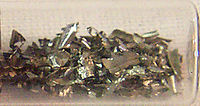

Numero atomico: 40
Massa atomica: 91,22
Temperatura di fusione (°C): 1852
Temperatura di ebolizione (°C): 4409
Energia di prima ionizzazione (kj/mol): 660
Elettronegatività (secondo Pauling): 1,33
Densità: 6,49
Numeri di ossidazione: +4
Configurazione elettronica: 1s2, 2s2, 2p6, 3s2, 3p6, 3d10, 4s2, 4p6, 4d2, 5s2
Maggiori Informazioni